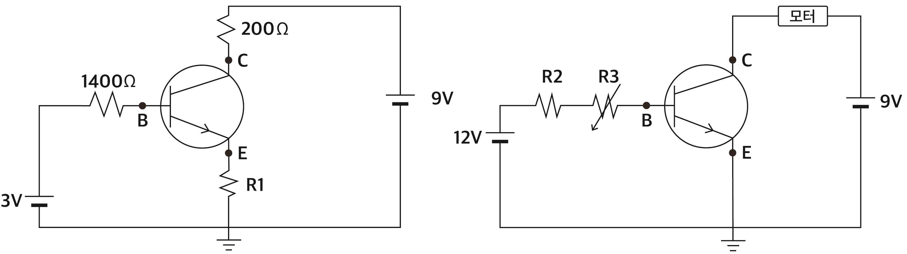

해설 2
트랜지스터의 증폭 작용을 이해하는 문제이다. 저항 값의 변화에 따른 베이스, 이미터, 컬렉터에 흐르는 전류의 값을 증폭률을 이용하여 구하는 능력을 평가하는 문제이다.
(문제2-1) 트랜지스터의 증폭 작용을 이해하여, 컬렉터 전류 값을 알 때 이미터와 베이스 전류 값을 추론하여 적절한 저항 값을 유추하는 문제이다.
(문제2-2) 컬렉터 전류 값의 범위를 알 때, 트랜지스터의 증폭 작용을 이해하여, 베이스 전류 값을 범위를 추론하여 적절한 가변 저항기의 저항 값의 범위를 유추하는 문제이다.

2-1
증폭률을 이용한 식을 구한다. (5점)
\[I_B = \frac{I_C}{\beta} = \frac{20}{100} \text{ mA}\]
순방향 바이어스 쪽 회로로부터 아래 식을 구한다.
\[3V = 1400 I_B + V_{BE} + R_1 I_E = 1400 \frac{I_C}{100} + 0.7 + R_1(I_C + I_B)\]
\[= 14I_C + 0.7 + R_1\left(I_C + \frac{I_C}{100}\right)\]
\[2.3 = 20 \times 10^{-3}(14 + 1.01R_1)\]
\[\therefore R_1 = 100 \; \Omega\]
2-2
전류가 최대로 걸릴 때 \(R_2\)를 구한다. (5점)
베이스에 걸리는 전류를 전압과 저항의 식으로부터 구한다.
\[I_B = \frac{12 - 0.6}{R_2 + R_3}\]
컬렉터에 걸리는 전류는 증폭률을 이용하여 식을 세울 수 있다.
\[I_C = \beta I_B = 100 \frac{11.4}{R_2 + R_3}\]
\(I_C\)의 범위는 190mA부터 570mA이기에 \(I_C\)의 최댓값인 570mA가 흐르기 위해서는 가변저항이 0 이어야 한다.
\[I_C = 570 \times 10^{-3} = \frac{1140}{R_2} \text{ A}, \qquad \therefore R_2 = 2 \text{ k}\Omega\]
전류가 최소로 걸릴 때 \(R_{3\text{max}}\)를 구한다. (5점)
\(I_C\)의 최솟값인 190mA가 흐르기 위해서는 가변저항이 최댓값이어야 한다.
\[I_C = \beta I_B = 100 \frac{11.4}{R_2 + R_3} = \frac{1140}{2000 + R_{3\text{max}}} = 190 \times 10^{-3} \text{ A}\]
\[\therefore R_{3\text{max}} = 4 \text{ k}\Omega\]